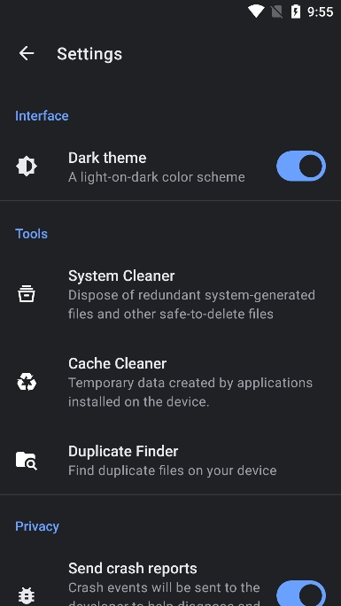
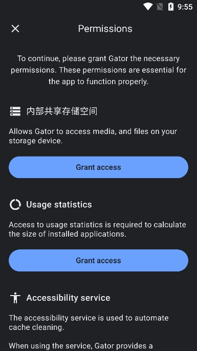
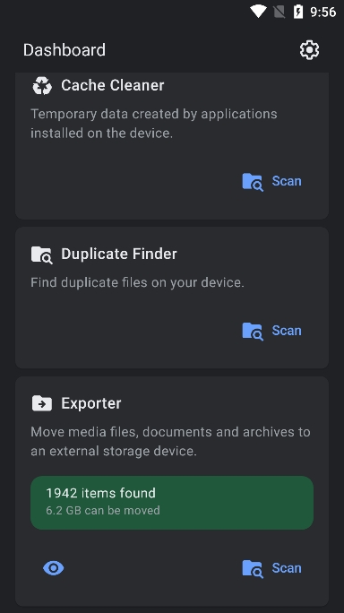

Gator 清理踩过的七个坑，知道这些之后省太多事
Gator 作为一个多合一的 Android 清理工具，看着简单好用，但实际跑下来有几个容易踩的坑。本文从权限、定时器到清理验证，把常见翻车点逐个说清楚。
Gator官网 上这款多合一清理工具大家都装过——空间不够了拉出来扫一把，缓存清了残留也清了，看起来一切都好。但我用了大半年才发现，它背后藏着好几个让你"以为清干净了其实没清"的坑。第一次遇到的时候我以为要重装 App，后来翻了 Gator文档 才弄明白到底是怎么回事。
坑一：Scheduler 定时清理自动跳过了缓存
Scheduler 面板里设的好好的，每天凌晨 3 点全量清理，结果一周后发现缓存一点没动。跑去看日志才发现，缓存那项每次都被跳过。原因很简单——缓存清理需要无障碍服务代执行，这是 Android 的硬限制，Google Play 版本的清理工具都绕不开。没开无障碍的话，Scheduler 会默默跳过缓存清理，但残留、日志、浏览器历史这三类照样自动清。这个坑隐蔽就隐蔽在 Scheduler 不会弹窗警告，跑了就是跑了，只是缓存那项没做。
解法：要么手动跑 System Cleaner 清缓存，要么花五分钟把无障碍服务开了。设置里搜"无障碍"，找到 Gator 打开就行。

坑二：清理完空间没变大——三种原因别搞混
这个坑我踩的最频繁。扫出 500MB 垃圾，点清理，然后打开系统设置看存储——数字纹丝不动。第一反应是 App 坏了要重装，其实有三种完全不同的原因。
第一种是清理执行中断了。Android 在清理大文件或敏感区域时会弹权限确认框，这时候如果你锁屏了、跳页面了、或者被其他 App 弹窗盖住没及时处理，清理动作可能只完成了一半。验证方法很简单——清理完重跑一次 System Cleaner，如果上次的条目还在，就是中断了。解法也直接，重新跑一次，这次别锁屏别切 App。
第二种是 Android 存储统计本身有延迟。系统设置里的存储页面不是实时更新的，同步周期可能是几分钟甚至更长。我习惯清完等个十分钟再去看，这时候数字肯定变了。
第三种是缓存类垃圾本身不大。System Cleaner 里标了"200MB 缓存"，实际可能分散在几十个应用里，每个应用清个几 MB，加起来确实释放了空间但视觉上不明显。这时候用 Storage Analyzer 看同一应用的占用变化最靠谱，数字会实实在在地变小。
坑三：root 设备才能看到临时 root 数据清理项
System Cleaner 里有个"临时 root 数据"的勾选项，没 root 的设备上这一项完全不出现。我第一次在一台老设备上找了半天没找到，以为是 App 版本问题，反复从下载页卸了又装了两次，结果还是没有。后来才明白这不是什么 bug——临时 root 数据是 Magisk、SuperSU 这类 root 工具运行时产生的中间产物，没 root 过的设备根本不会有这些文件，自然也就不会显示清理项。
判断自己有没有 root，可以看 System Cleaner 卡片下有没有"临时 root 数据"的选项。有就是 root 了，没有就是没 root，一眼的事，别跟我一样瞎折腾。
坑四：电池优化会收回定时器的唤醒权限
设好的 Scheduler 用了两周后突然不触发了，检查时间设置没问题、清理范围也没改，就是不跑。查了半天才发现是 Android 的省电策略干的好事。系统会定期检查后台 App 的活跃程度，如果判断 Gator"不活跃"就会收回它的后台唤醒权限。对于一个清理工具来说，"不活跃"几乎是必然的——谁会天天手动打开清理？
解法是去系统设置里把 Gator 加到电池优化白名单里。这样省电策略就不会动它的定时器权限了。这个坑的可怕之处是它没任何预警，定时器从某一天开始就静默不工作了，你可能过好几周才发现。

坑五：Storage Analyzer 只看不管，别指望它直接清理
Storage Analyzer 按文件类型和应用分别列出占用情况，数字很直观——微信加缓存 3GB、某个游戏数据包 6GB。但它只是展示，点进去没有任何清理按钮。我第一次用的时候以为这就是清理面板，对着数字看了半天没找到入口，还以为是功能没开放。
正确的姿势是用 Analyzer 先扫一遍，记下前三大空间大户，然后切到 Dashboard 找对应工具处理：缓存大头用 System Cleaner 或 Cache Cleaner，重复文件用 Duplicate Finder，不常用应用用 App Manager 卸载。Analyzer 是盘点工具不是清理工具，别在那死等。
坑六：Magisk 模块清理 root 数据后需要重启
清完临时 root 数据后，某个 Magisk 模块突然不工作了。以为是模块坏了要重装，到 Magisk 管理器里一看，模块还在只是没激活。原来清理临时 root 数据的时候，可能碰巧清到了那个模块安装留下的未完成脚本片段。解法非常简单——到 Magisk 管理器里点一下"重新启动"，模块就自动恢复了，完全不需要重装。
这个坑的教训是：清理 root 数据之前，先确认所有 root 相关操作都已经正常结束。如果刚装了一个 Magisk 模块还没重启，先重启再清理，避免清到半截的安装脚本。
坑七：验证清理效果别只看系统设置页
上面说过系统设置页的存储数字有延迟，但很多人还是忍不住盯着那个数字看。正确的验证应该分三步：重跑 System Cleaner 看列表是不是变短或空了，用 Storage Analyzer 扫一遍看之前的大头是不是缩小了，最后等五分钟再看系统设置页的总空间数字。三步都过了才是真的清干净了，只盯第一步或最后一步都可能误判。

防坑清单
- Scheduler 设完后立刻检查无障碍服务——缓存清不掉不报错，容易被忽略。
- 别盯着系统设置页数字判断清理结果——先重跑 System Cleaner，再等几分钟。
- root 数据清理前先重启一次——确认 root 操作都结束了再清，避免影响模块。
- 电池优化白名单一定要加——Scheduler 静默失效的头号原因。
- Storage Analyzer 是盘点工具不是清理工具——看完数字切到对应模块动手。
一点收尾
Gator 的清理能力本身没话说，踩过这些坑之后反而觉得它设计得挺克制——很多"没反应"其实是 Android 系统的限制，Gator 只是没办法绕过而已。知道这些坑之后，这软件其实相当省心，设好定时器加好白名单，基本就能一直用下去。
这套整理资料在 GitHub、Gitee、GitCode 三个仓库都同步了文档目录，方便不同网络环境的朋友随时查阅和下载，国内访问选 Gitee 或 GitCode 会更顺畅一些。